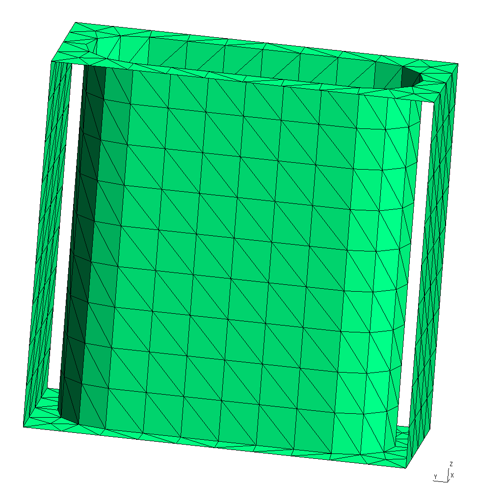
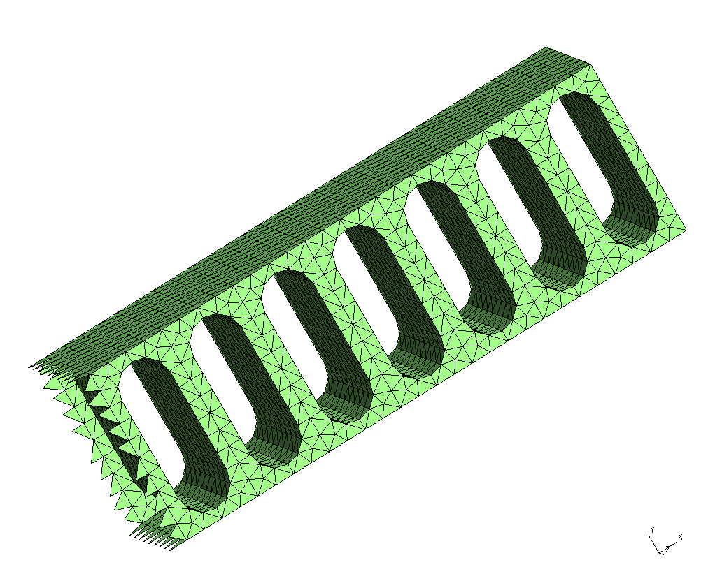
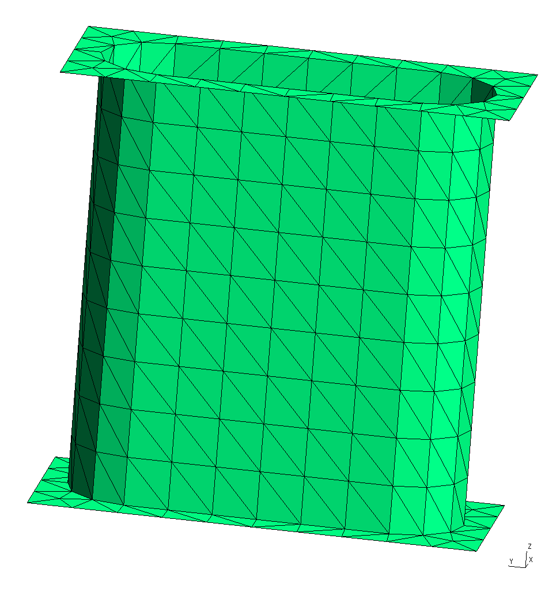
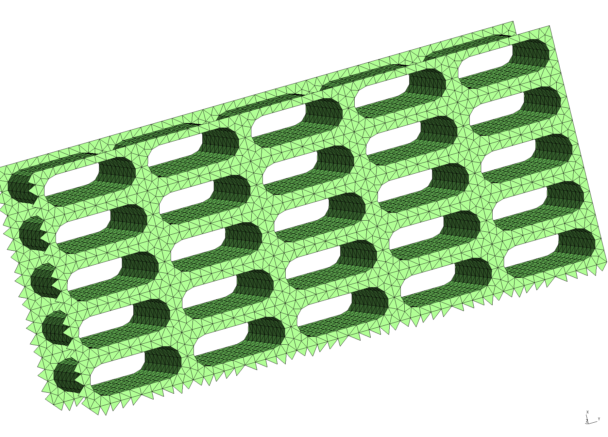
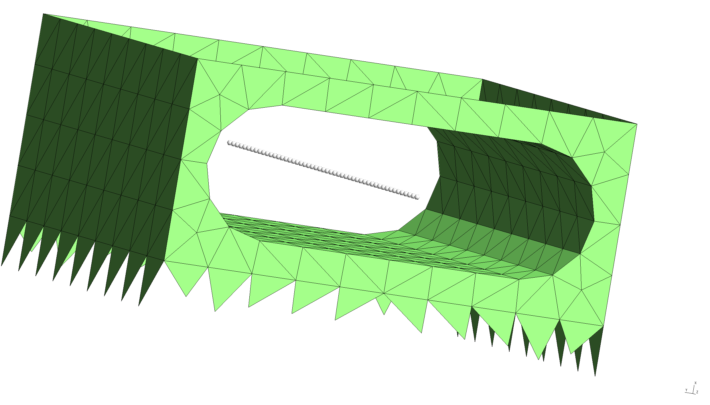

Casimir-Polder potentials in dielectric nanostructures
In this example, we exploit scuff-em's support for periodic geometries to compute Casimir-Polder potentials for atoms inside dielectric waveguides. Our basic test example will be the 1D photonic crystal studied in this paper:
We will illustrate the use of scuff-em's Casimir-Polder
module scuff-caspol by reproducing the results of
Hung et al. for a 1D lattice, then extend the calculation
to the case of a 2D square lattice.
The files for this example may be found in the
share/scuff-em/examples/NanobeamCasimirPolder subdirectory
of your scuff-em installation.
gmsh geometry and surface mesh for nanobeam unit cell
The gmsh geometry file UnitCell.geo
describes just the portion of the nanobeam surface that
lies within the unit cell, i.e. the cell that is
infinitely periodically replicated to yield the full
geometry. To produce a discretized surface-mesh
representation of this geometry, we run it through
gmsh:
% gmsh -2 UnitCell.geo
This produces a file named UnitCell.msh, which
I rename to NanoBeamUnitCell_1006_.msh because
(a) I will be using it as the unit cell of a beam
geometry, in contrast to a different use I will find
for the same unit cell below; and (b) the mesh has 1006
interior edges (this is the number that defines the
memory and computation time requirements for the
scuff-em calculation; it may be found by running
scuff-analyze --mesh UnitCell.msh).
You can open the .msh file in gmsh to visualize
the unit-cell mesh:
% gmsh NanoBeamUnitCell_1006.msh

Note the following:
-
For 1D periodic geometries in scuff-em, the direction of infinite extent must be the x direction.
-
The sidewalls normal to the and directions are meshed, but the sidewalls normal to the direction are not meshed for this structure, because those surfaces are not interfaces between different dielectrics.
-
For surfaces that straddle the unit-cell boundaries (as is the case here), each triangle edge that lies on the unit-cell boundary must have an identical image edge on the opposite side of the unit cell. An easy way to achieve this is to use extrusions in gmsh, as in the
.geofile above. -
In this case the unit cell is 0.367 m long. This and other geometric parameters can be modified by editing the file
UnitCell.geoor directly on the gmsh commmand line using the-setnumberoption.
scuff-em geometry file for dielectric nanobeam
A scuff-em [geometry file]scuffEMGeometries
describing an extended nanobeam consisting of infinitely
many repetitions of the above unit cell filled with
a dielectric material of constant relative permittivity
, is
NanoBeam_1006.scuffgeo.
The file reads, in its entirety,
LATTICE
VECTOR 0.367 0.0
ENDLATTICE
OBJECT Nanobeam
MESHFILE NanoBeamUnitCell_1006.msh
MATERIAL CONST_EPS_4
ENDOBJECT
We can use scuff-analyze to visualize the geometry
described by this .scuffgeo file:
% scuff-analyze --geometry NanoBeam_1006.scuffgeo --WriteGMSHFiles --Neighbors 3
[The option --Neighbors 3 requests that, in addition to the unit-cell
geometry, the first 3 periodic images of the unit cell in both the
positive and negative directions (for a total of 5 copies of the
unit cell) be plotted as well. This helps to convey a slightly
better sense of the actual infinite-length structure being
simulated.] This produces the file NanoBeam_1006.pp, which you
can view in gmsh:
% gmsh NanoBeam_1006.pp

Note that the visualization file produced by scuff-analyze includes extra triangles (visible at the left end of the structure) that are not present in the unit-cell geometry. These are called straddlers, and they are added automatically by scuff-em to account for surface currents that flow across the unit-cell boundaries in periodic geometries.
gmsh geometry and surface mesh for nanoarray unit cell
It's easy to generalize all of this to a geometry
with two-dimensional periodicity. The only modification
required to the unit-cell mesh is that we have to
remove the sidewalls normal to the direction.
This can be done using the same gmsh geometry
we used above for the nanobeam unit cell, but with
the extra command-line option -setnumber LDim 2
on the gmsh command line. (Here LDim stands
for "lattice dimension".)
% gmsh -2 -setnumber LDim 2 UnitCell.geo
This produces a file named UnitCell.msh, which
I rename to NanoArrayUnitCell_800_.msh. It looks like this

scuff-em geometry file for dielectric nanoarray
A scuff-em geometry file
describing a dielectric surface extended in two
dimensions and perforated with a square lattice
of the holes pictured above is
NanoArray_800.scuffgeo.
The file reads
LATTICE
VECTOR 0.367 0.0
VECTOR 0.000 0.845
ENDLATTICE
OBJECT NanoArray
MESHFILE NanoArrayUnitCell_800.msh
MATERIAL CONST_EPS_4
ENDOBJECT
Again we use scuff-analyze to visualize the geometry
described by this .scuffgeo file:
% scuff-analyze --geometry NanoArray_800.scuffgeo --WriteGMSHFiles --Neighbors 3

Evaluation points for Casimir-Polder potentials
For a Casimir-Polder calculation we will want to evaluate
the Casimir-Polder potential at range of points. We
put the Cartesian coordinates of these points into a
text file named EPFile, which looks like
this:
0.1835 0.4225 -0.500
0.1835 0.4225 -0.480
0.1835 0.4225 -0.460
...
0.1835 0.4225 0.480
0.1835 0.4225 0.500
and defines a line of points running through the middle of the hole in the beam unit cell.
To double-check that the evaluation points we specify are actually where we expect them to be vis-a-vis the meshed surfaces in our problem, we can ask scuff-analyze to plot the evaluation points together with the unit-cell geometry:
% scuff-analyze --geometry NanoBeam_1006.scuffgeo --EPFile EPFile --WriteGMSHFiles

This confirms that our EPFile describes a line of evaluation
points running through the middle of the hole in the beam
structure, as desired.
Setting up the Casimir-Polder calculation
To compute the Casimir-Polder potential on, say, a rubidium atom at the above evaluation points for the 1D and 2D extended structures, we now say simply
% scuff-caspol --geometry NanoBeam_1006.scuffgeo --EPFile EPFile --Atom Rubidium
and/or
% scuff-caspol --geometry NanoArray_800.scuffgeo --EPFile EPFile --Atom Rubidium
These calculations will produce files named NanoBeam_1006.out and
NanoArray_800.out tabulating the Casimir-Polder potential
experience by the rubidium atom at each of the specified evaluation
points.
For more information on scuff-caspol, see the old scuff-caspol documentation, which is thorough and up-to-date (though it does not cover CP calculations in extended geometries) despite having not yet been ported from its previous format.